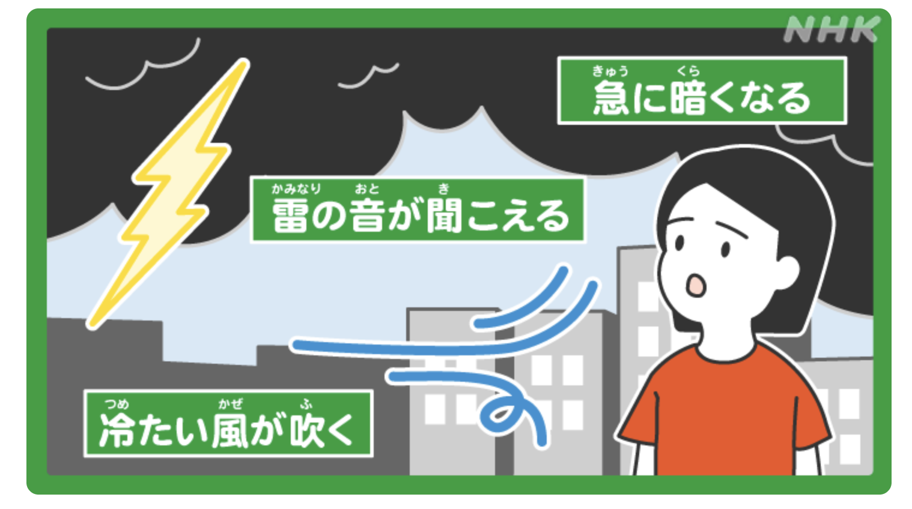
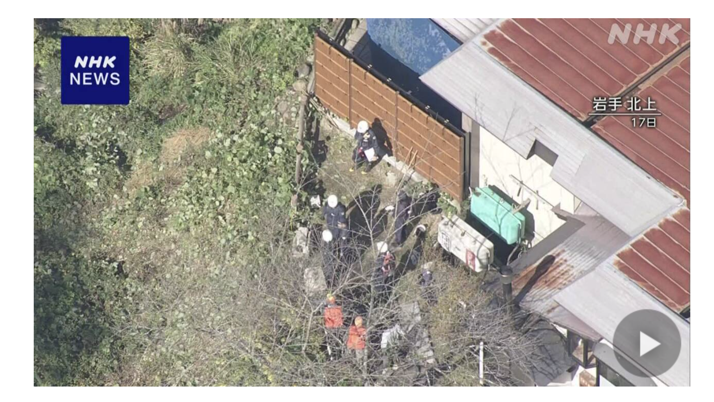

～てください
| Polite | ～てください |
|---|---|
| Casual | ～て |
Same meaning: "please do". Only the politeness changes.

1 Litre of Tears · Episode 1
受験生は、急いでください。
"Exam takers, please hurry." [a staff member at the exam building]
てください after a verb means please do it: you ask someone to do something.
It goes on the て-form. Make it like the past form, just with て instead of た: 急いだ → 急いで, 食べた → 食べて, 行った → 行って. It answers "what do you want me to do?": hurry.
ください makes it polite: for strangers, shops, teachers. With friends you drop it and just say the て-form.

Shirokuma Cafe · Episode 14
大丈夫、任せて。
"It's fine, leave it to me."
Same request, just the て-form with nothing after it. 任せる → 任せて: "leave it (to me)".
Examples
In a shop, you point at a bag behind the counter.
そのかばんを見せてください。
"Please show me that bag."
見せる → 見せて.
PoliteYou get into a taxi.
駅まで行ってください。
"To the station, please."
行く → 行って. Literally "please go to the station".
PoliteThe teacher spoke too fast and you missed it.
もう一度言ってください。
"Could you say that again, please?"
言う → 言って.
PoliteYour friend is walking off and you still need your shoes on.
ちょっと待って！
"Wait a sec!"
待つ → 待って.
CasualYour friend is busy right now.
じゃあ、あとで電話してね。
"Okay, call me later."
する → して. The ね makes it softer.
CasualWith and without
窓を開けます。
"I'll open the window." You do it yourself.
窓を開けてください。
"Please open the window." You ask someone else to do it.
Sentence mining


Shirokuma Cafe · Episode 4
だから元気出して。
"So cheer up."
元気を出す (to cheer up) → 出して.

YouTube · video
皆さんのおすすめのレストランを、ぜひコメント欄で教えてください！
"Please tell me your favorite restaurants in the comments!"
教える → 教えて. ぜひ adds "really, do".

Shirokuma Cafe · Episode 2
戻してね。
"Put it back, okay?"
戻す → 戻して.

NHK News Web Easy · article
積乱雲を見たら、安全な場所に逃げてください。
"If you see a thundercloud, get to a safe place."
逃げる → 逃げて.

Shirokuma Cafe · Episode 2
カフェの真ん中には、水槽おいてね。
"Put a fish tank in the middle of the cafe."
おく (置く, to put) → おいて.

YouTube · My Five Favorite Things
詳しくは、ウェブサイトをチェックしてください。
"For details, check the website."
チェックする → チェックして.

NHK News Web Easy · article
熊から自分を守るスプレー、使い方に気をつけて。
"Bear spray: be careful how you use it."
気をつける → 気をつけて. A headline, so it's short like casual speech.